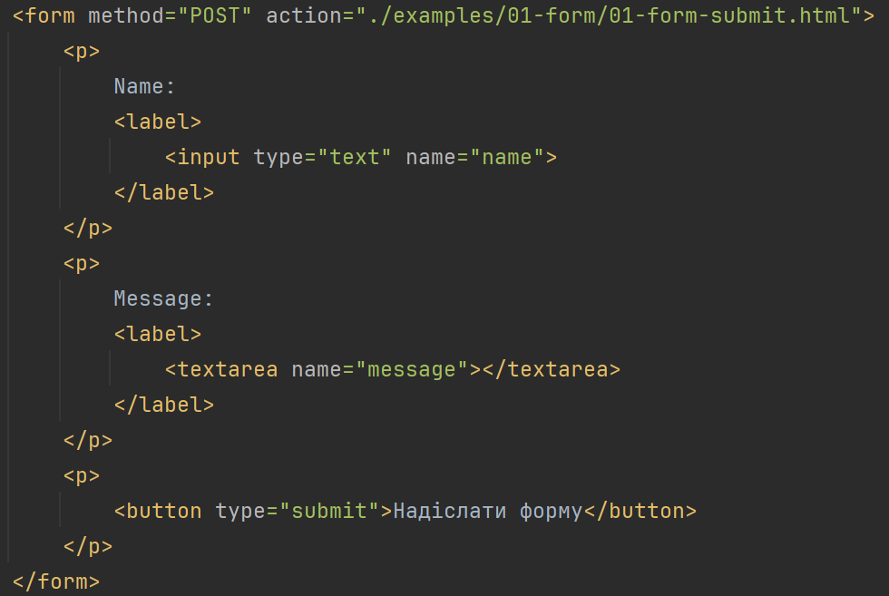

Лекція 3. Інтерактивність інтерфейсів: форми, мультимедіа контент та клавіатурна навігація.
Лекція 3. Інтерактивність інтерфейсів: форми, мультимедіа контент та клавіатурна навігація.
План лекції:
Проєктування інтерфейсів взаємодії з користувачем за допомогою HTML-форм.
Анатомія тегу form.
Сучасні типи полів вводу input (text, email, tel, password, date, number, range) та їхня специфіка й
поведінка на мобільних пристроях.
Атрибути декларативної клієнтської валідації (required, pattern, min/max) без використання сторонніх
скриптів.
Елементи вибору (textarea, select, checkbox, radio).
Робота з кнопками.
Вбудовування мультимедійних компонентів (audio, video), керування потоками та субтитри.
Забезпечення повноцінної клавіатурної навігації (керування фокусом, атрибут tabindex).
Проєктування інтерфейсів взаємодії з користувачем за допомогою HTML-форм.
Веб-сайти використовують форми, щоб отримати певну інформацію від користувача. Це може бути форма замовлення
в інтернет-магазині або форма зворотного зв’язку. Користувач заповнює поля або вибирає потрібну опцію зі
списку, а після надсилання форми ці дані можна обробити.
Форми були придумані, як спосіб передачі інформації, введеної користувачем, через HTTP. Вони були розроблені
до
появи JavaScript, з тим розрахунком, що взаємодія із сервером відбувається під час переходу на іншу сторінку
Але їхні елементи є частинами DOM (Об’єктна модель документа (Document Object Model) — програмний інтерфейс
для HTML- та XML-документів), як і інші частини сторінки, а елементи DOM, що представляють поля форми,
підтримують кілька властивостей і подій, яких немає в інших елементів. Це уможливлює переглядати та керувати
полями з програм JavaScript і додавати функціональності до класичних форм або використовувати форми та
поля як основу для побудови програми.
Проєктування інтерфейсів взаємодії з користувачем за допомогою HTML-форм.

Якщо ми змінимо атрибут method у формі на POST, запит HTTP з відправкою форми пройде за
допомогою методу
POST, який надішле рядок запиту в тілі запиту замість додавання її до URL.
Анатомія тегу <form>...</form>
Тег <form> є контейнером для форми, розміщеної на веб-сторінці. Форма
призначена для обміну даними між користувачем і сервером. Область
застосування форм не обмежена надсиланням даних на сервер, за допомогою
клієнтських скриптів (js) можна отримати доступ до будь-якого елемента форми, змінювати
його і застосовувати на свій розсуд.
Стилізувати <form> можна за допомогою CSS.
На сторінці можна створити скільки завгодно
форм.
Але одночасно
користувач зможе надіслати лише одну заповнену форму.
Атрибути тегу <form>...</form>
action - тут вказується посилання на скрипт, який оброблятиме форму. Це може бути повне URL-посилання
або відносне, наприклад html/sendform. Якщо не вказати атрибут action, сторінка просто оновлюватиметься
щоразу, коли надсилається форма.
method - метод запиту на сервер, є два основних значення: GET і POST.
GET
- відповіді користувача додаються до URL у форматі «параметр=значення», наприклад
«email=name@chnu.edu.ua». Це виглядає так: site.com/form?name=Max&email=name@chnu.edu.ua. Тобто параметр -
це те, про що ви запитуєте у користувача, а значення - його відповідь. Пари «параметр=значення» розділяються
знаком &. Варіант method="GET" використовується за замовчуванням, але у нього є обмеження: URL не повинен
перевищувати 3000 символів.
POST
- дані з форми пакуються в тіло форми й надсилаються на сервер. У цьому
випадку немає обмежень щодо
обсягу даних, тому цей спосіб підійде для заповнення бази даних або надсилання файлів.
target - вказує, як буде відображено результати, у поточному вікні або новій
вкладці.
Атрибути тегу <form>...</form>
autocomplete - увімкнення або вимкнення автозаповнення для форми. Браузер може підставити дані, які
користувач зберіг раніше, наприклад, пароль, номер банківської картки або адресу. Якщо у користувача в
налаштуваннях браузера вимкнено функцію автозаповнення, то цей атрибут уже ні на що не вплине. Атрибут
autocomplete можна задати й для конкретних елементів. Є два значення: on - значення за замовчуванням.
Увімкнення автозаповнення для цієї форми. off - вимкнення автозаповнення. Наприклад, якщо форма збирає
унікальні дані типу капчі («Введіть слово з картинки»).
novalidate — цей атрибут не має значення. Якщо його додати, браузер не перевірятиме правильність
заповнення форми. Наприклад, чи правильно введено адресу електронної пошти або URL для тегів <input
type="email"> та <input type="url"> відповідно. Зазвичай браузер перевіряє, чи не пропустили ви @
або домен.
Зокрема, перевіряється й заповнення обов’язкових полів.
Атрибути тегу <form>...</form>
enctype — визначає, який тип кодування буде застосовано до даних із форми. Цей атрибут обов’язково
потрібно вказувати, якщо через форму надсилаються файли; в інших випадках — не обов’язково.
Існує три варіанти кодування:
application/x-www-form-urlencoded — це значення за замовчуванням. Дані кодуватимуться так, що
пробіли перетворяться на знак +, а символи, наприклад кирилиці, будуть представлені у
шістнадцятковому значенні. Наприклад, так виглядатиме ім’я Степан:
%D0%A1%D1%82%D0%B5%D0%BF%D0%B0%D0%BD
multipart/form-data — варіант, який слід вказати, якщо через форму надсилаються файли. У цьому
випадку дані не кодуються.
text/plain — у цьому випадку пробіли замінюються на +, а решта символів передаються без змін.
Відправлення форми за допомогою атрибутів action та method відбувається синхронно — браузер надсилає запит за
адресою та відображає на екрані все, що буде отримано у відповідь. Це призводить до повного оновлення сторінки.
Можна надсилати форми асинхронно, без перезавантаження сторінки, але для цього потрібно писати код JavaScript,
який надсилатиме запит, отримуватиме відповідь і оновлюватиме сторінку даними з відповіді.
Методи GET и POST
GET
Цей метод є одним із найпоширеніших
поширених і призначений для
отримання необхідної інформації та
передавання даних в адресному рядку.
Пари «ім'я=значення» приєднуються
у цьому випадку до адреси після
знака питання і розділяються
між собою амперсандом (символ &).
POST
Метод POST надсилає на сервер
дані в запиті браузера. Це
дає змогу надсилати більшу
кількість даних, ніж доступно
методу GET, оскільки в нього
встановлено обмеження в 4 Кб.
Великі обсяги даних використовуються
у форумах, поштових службах,
заповнення бази даних, під час
пересилання файлів тощо.
Поля
Веб-форма складається з будь-якої кількості полів вводу, оточених тегом form - спосіб стилістичного та семантичного угруповання елементів форми. HTML пропонує
багато різних полів, від простих галочок зі значеннями, до списків, що випадають, і полів для введення тексту.
Коли значення поля змінюється, запускається подія change.
(text)
(password)
(checkbox)
(radio)
(file)
Фокус
За традицією браузери дозволяють користувачу переміщувати фокус клавішею Tab. Ми можемо впливати на порядок
переміщення через атрибут tabindex. У прикладі документ переноситиме фокус із текстового поля на кнопку OK,
замість того, щоб спочатку пройти через посилання help link.
За замовчуванням більшість типів елементів HTML не отримують фокусування. Але додавши tabindex до елемента, ви
уможливите отримання ним фокуса.
Відключені (disabled) поля
Усі поля можна відключити атрибутом disabled, який існує і як властивості елемента об'єкта DOM.
Коли програма знаходиться в процесі обробки натискання на кнопку або інший елемент, який може вимагати
спілкування з сервером і зайняти тривалий час, непогано відключати елемент до завершення дії. У цьому випадку,
коли користувач втратить терпіння і натисне елемент ще раз, дія не буде повторена зайвий раз.
Форма загалом
Атрибут name поля визначає, як буде визначено значення цього поля при передачі на сервер. Його також можна
використовувати як ім'я властивості при доступі до властивості форми elements, який працює як об'єкт, схожий на
масив (з доступом за номерами), так і map (з доступом по імені).
Кнопка з атрибутом submit при натисканні відправляє форму. Натискання клавіші Enter всередині поля форми має той
самий ефект.
Відправлення форми зазвичай означає, що браузер переходить на сторінку, позначену в атрибуті форми action,
використовуючи GET або POST запит.